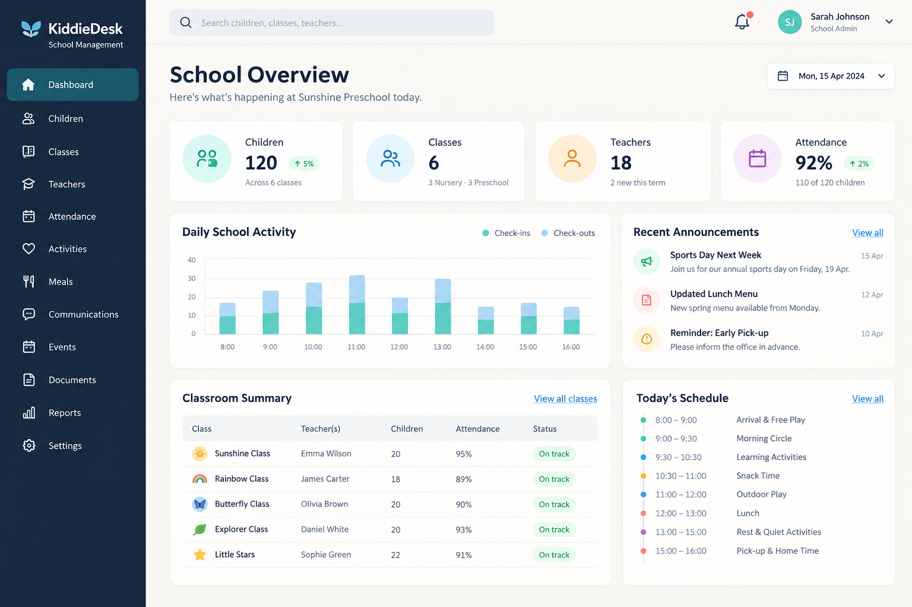
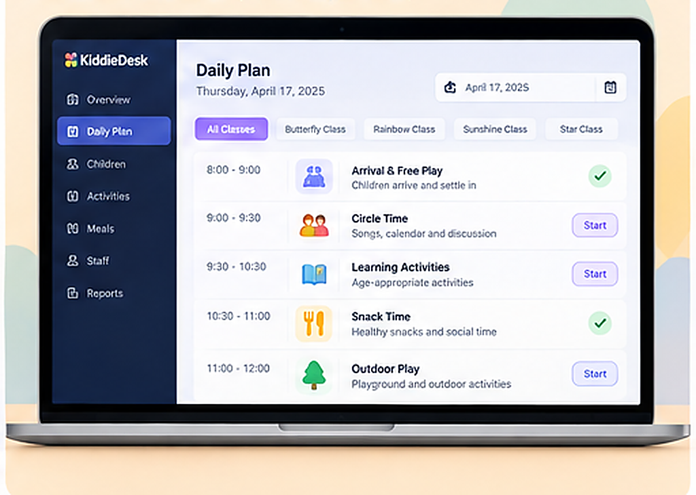
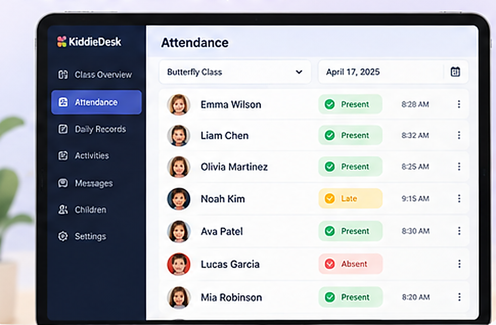
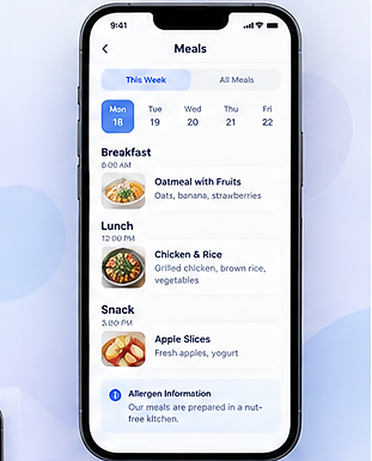
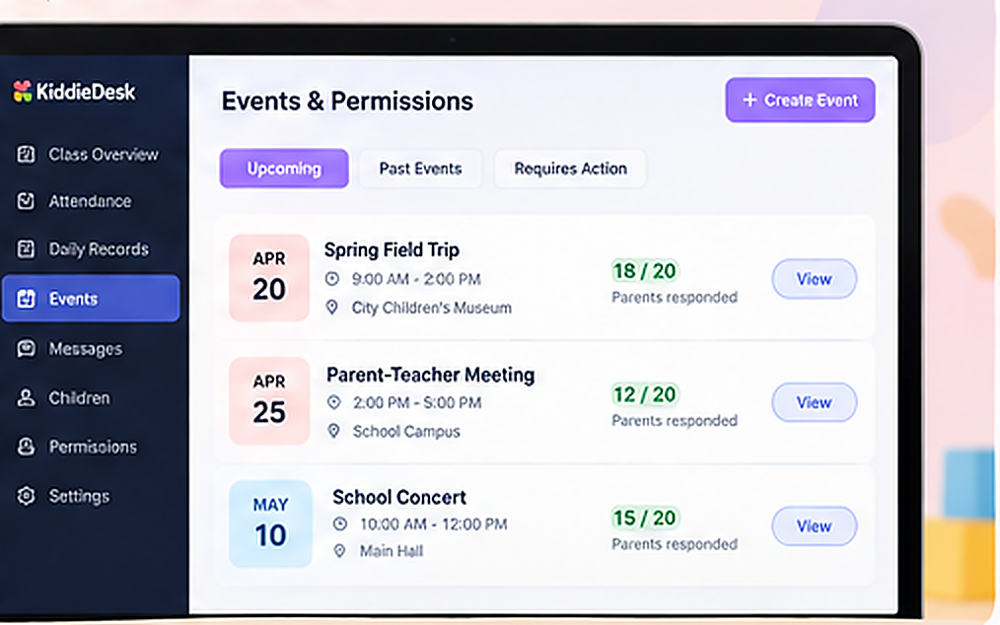
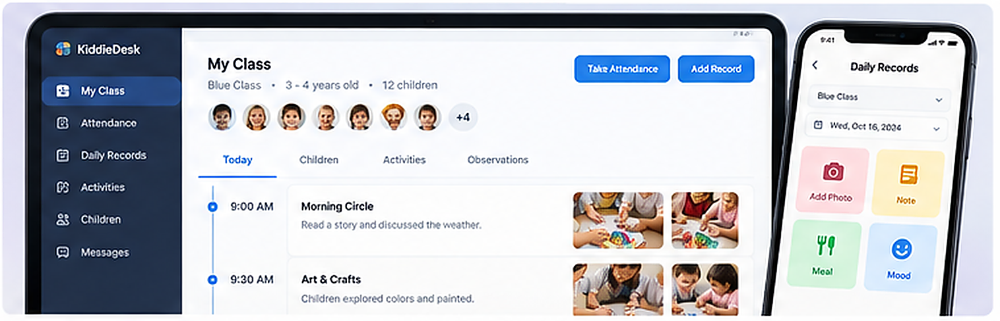

01 · KIDDIEDESK
The conversation that started everything
KiddieDesk did not start with a feature request or a polished pitch deck. It started when a friend who worked as a teacher told me what an ordinary school day looked like behind the scenes.
She spent time not only with children, but also trying to keep parents informed: passing on updates, answering questions and making sure the right information reached the right family. She showed me an early-stage app her school had been asked to use. It was meant to help, yet inaccurate information and gaps in the experience left too much work unresolved.
I initially saw a communication problem. The more I thought about it, the more I saw a wider product opportunity. Attendance, care records, family messages and school administration were not separate problems; they were different parts of the same child's day. Fixing a messaging screen alone would not fix the information moving behind it.
My first product question became: how might we connect the people responsible for a child without asking every one of them to use the same complicated interface?
That question became the starting point for KiddieDesk at VenusSoft.
Product insight · Schools didn't need another place to type updates. They needed a reliable way to create, share and act on information across teachers, parents and administrators.
02 · KIDDIEDESK
Discovery: understanding the work before designing the screens
I began speaking with teachers, parents and the school that would become our customer. I wanted to understand what people were doing today, which information they needed, and where the handoffs between roles became difficult.
Three perspectives kept coming together:
- Teachers needed to record attendance, daily care and classroom activities without turning every update into another administrative task.
- Parents needed a clear, child-specific picture of the school day, with timely updates and meaningful notices.
- School leaders needed to coordinate student records, classes, communication and operational work from a dependable school context.
I mapped these jobs into role-based journeys, identified where records were shared, and translated the discussions into a product vision and a first feature map. That was also where I began writing the functional and non-functional requirements: not just what the software should show, but whose information it should show, when a step was complete, and what should happen when something went wrong.
What I led in discovery
User and stakeholder work: discussions and interviews with teachers, parents and the school customer; synthesis of needs and feedback.
Product structure: role and journey maps, requirements, priorities and initial information architecture.
Validation plan: interactive workflows people could react to before production development.
Longer-term direction: a product model that could serve additional schools rather than a one-off installation.

03 · KIDDIEDESK
One child, several people, one connected product
From discovery, the product vision became clearer: one coherent child-and-family context, with a different experience for each person who needs to use it.
The school management experience organizes records and day-to-day operations. Teachers work from class and care workflows. Parents see the updates and decisions relevant to their own child. Platform operations support a multi-school product behind those experiences.
This matters because a preschool day is made up of small events with real consequences: a child arrives, lunch is recorded, a notice needs confirmation, a medicine request is reviewed, and an authorized adult comes for pickup. Each action involves different people, but they need to agree on the same underlying information.
Three connected experiences
School managers — oversee children, classes and school operations without losing the bigger picture.
Teachers — record attendance, daily events and care in the flow of the classroom day.
Parents — understand their child's day and respond to notices or requests from a relevant, child-specific view.



04 · KIDDIEDESK
Turning a big idea into a buildable MVP
Multi-role products invite a long list of feature requests. My job was to connect those requests to genuine user jobs and make the delivery scope understandable.
I organized the product around school context, everyday care and family communication. Then I translated those areas into journeys, functional requirements, non-functional constraints and acceptance criteria that designers and developers could actually use. I worked with the school and delivery team to clarify dependencies and decide what we needed to validate first.
Two product decisions illustrate why this work was more than a feature list:
Decision 01 — Make the parent's child's day the starting point
A parent opens an app primarily to learn about their child. In the documented product design, the daily summary was prioritized above financial information on the parent home screen. The decision was about matching the information hierarchy to the user's immediate job, not about packing the most features onto a page.
Decision 02 — Distinguish important actions, not just screens
In the specification, reading a notice, acknowledging it and making a permission decision are different actions. So are a child's attendance record, an access-card event and the actual staff-confirmed pickup handover. Those distinctions matter when designing safe, understandable flows and clear acceptance criteria.
Health, allergen information and record access also required careful rules: a parent should not see another child's details, and sensitive requests need an explicit state and accountable human decision. These are examples of the product's documented design depth, not a claim that every rule was released in the first deployment.
I also defined a subscription-based selling model so that the product could become a sustainable SaaS offering for additional schools.

05 · KIDDIEDESK
Making the product tangible — before the code
After shaping the journeys, I turned the requirements into interactive prototypes. I used structured specifications and AI-assisted prototyping tools, including ChatGPT and OpenAI Codex, to make the proposed workflows tangible before handing them into full UI/UX and engineering delivery.
The prototypes made our conversations much more specific. Instead of asking a teacher whether they liked a feature description, we could walk through the steps they would take in class. Instead of asking a parent to imagine an update, we could show where it would appear. And with the customer school, we could review the experience end to end, discover unclear behavior and adjust the scope.
I gathered feedback, refined edge cases and kept the intended experience tied to the specifications and acceptance criteria. I owned the product decisions and prototype validation, not the production code.

What changed through prototyping: the conversation moved from “Can we build this feature?” to “Does this journey work for the person who has to use it?”
06 · KIDDIEDESK
Wearing three hats through delivery
KiddieDesk was also a project-management challenge. I stayed involved once the product direction was agreed, coordinating across the customer, UI/UX and development team and keeping the proposed experience aligned with what was being built.
Product management — choosing the right thing to build
I owned the problem framing, research synthesis, product vision, role-based user journeys, feature requirements, acceptance criteria and MVP scope. I helped keep the product focused on connected user needs rather than disconnected requests.
Project management — making the work deliverable
I coordinated discussions and handoffs between the customer, designers and developers. I clarified requirements, priorities and dependencies as the team progressed, and tracked the work against the agreed scope and expected experience.
Release management — taking it beyond a prototype
I helped coordinate validation and release preparation with the team, including scope alignment, readiness discussions and the transition toward the first school's use. The important distinction was between a screen that looked ready and a workflow that had been checked end to end. I treated role access, missing data, error handling and unresolved integrations as delivery questions, not details to ignore.
These responsibilities required different decisions, but they led toward the same outcome: a product the customer could actually use.
- Conversation
- Research & user journeys
- Requirements & MVP scope
- Interactive prototypes
- Customer validation
- UI/UX & Engineering
- MVP delivery
- One school in active use
Conceptual representation of my work — not a dated release timeline.
07 · KIDDIEDESK
The milestone that mattered: a real school using the MVP
The most meaningful outcome was not a screen or a prototype. KiddieDesk's MVP was delivered and is actively used by one school.
That gave the project a different kind of significance: an idea discovered through a teacher's frustration had become a product brought into a real school environment. It represented the full cycle of discovery, scope definition, user validation and coordinated delivery.
Delivered MVP · One school in active use · Further rollout planned
Additional schools are a next step, not a result I am claiming today. I am also not attributing specific efficiency gains, parent engagement increases, subscription revenue or module-by-module adoption without usage evidence.
08 · KIDDIEDESK
Beyond one product: an education experience worth building
My longer-term ambition at VenusSoft is bigger than a single preschool management application. We want to build a connected family of education-focused products that make the everyday experience better for educators, students, schools and families.
KiddieDesk is a practical starting point. Its strongest lesson is not that every school needs more software. It's that useful technology can remove coordination work around education: less friction between teachers and parents, clearer information for families, and more room for teachers to focus on the children in front of them.
The broader education product family is a vision for the future. It is not presented as a suite of launched products.
The vision · Give teachers more time for teaching, families more clarity, and schools tools that work together instead of adding more work.
09 · KIDDIEDESK
Looking back
This project reinforced something I care deeply about in product management: the most useful ideas often come from listening to someone doing the work, not from starting with an impressive feature list.
My biggest contribution was turning that first conversation into a structured product direction — understanding the people involved, making their needs visible in requirements and prototypes, and staying with the work until it became something real.
Good products don't just connect features. They connect people's work.